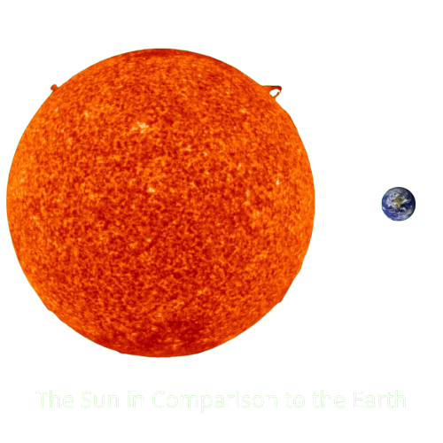

The sun, aka Helios or Sol, is the largest mass in our solar system. It takes up 99.86% of the total mass and is the main source of heat and light. It consists of primarily hydrogen and helium. It generates electromagnetic radiation that warms our planet and makes it possible for it to sustain life.
